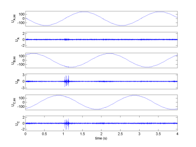
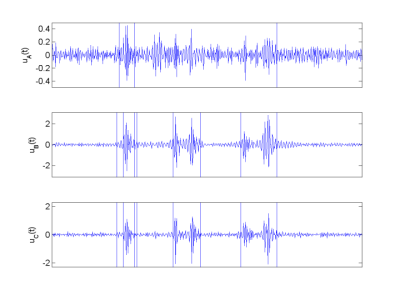
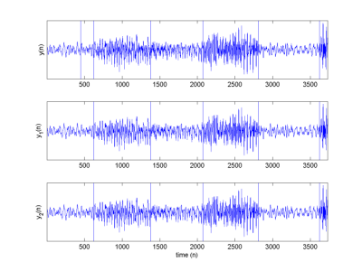

Joint segmentation of autoregressive processes
We propose a joint segmentation algorithm for piecewise constant autoregressive (AR) processes recorded by several independent sensors. The algorithm is based on a hierarchical Bayesian model. Appropriate priors allow to introduce correlations between the change locations of the observed signals. Numerical problems inherent to Bayesian inference are solved by a Gibbs sampling strategy. The proposed joint segmentation methodology yields improved segmentation results when compared to parallel and independent individual signal segmentations. The initial algorithm is derived for piecewise constant AR processes whose orders are fixed on each segment. However, an extension to models with unknown model orders is also discussed.
The joint segmentation procedure and the main results are detailed in a paper published in IEEE Trans. Signal Processing in 2007.
- article
 [ .pdf - 1.1Mo ].
[ .pdf - 1.1Mo ].
The corresponding Matlab codes are available below.
- matlab codes
 [ .tar - 120Ko ].
[ .tar - 120Ko ].
Synthetic data
The accuracy of the proposed abundance estimation procedure is illustrated by segmenting jointly two synthetic time series. The animation (100 frames) available below illustrates the convergence assessment of the algorithm. It represents the successive MMSE estimates of the posterior distributions of the changepoint locations provided by the procedure during the segmentation of the data used in the paper.
- mpg file
 [ .mpg - 250Ko ].
[ .mpg - 250Ko ].
Posterior probability of rupture as function of the number of MCMC iterations.
Real data: detection of "arc-tracking phenomenon"
We present here the segmentation of real aeronautical data. In order to prevent the aircraft fires provoked by the arc-tracking phenomenon, the algorithm detect the changes that can occur in the signals, modeled here as autoregressive processes. The triphased signals, whose fundamental frequency has been removed (Fig. 1), are jointly segmented. The results (Fig. 2) have been reported in the paper published in IEEE Trans. Signal Processing.

Fig. 1. Real signals to be segmented (with and without fundamental).

Fig. 2. Segmented signals.
Real data: segmentation of stereo speech signals
The results provided by joint and 1D segmentations are illustrated with a speech signal that has been often processed in the literature. These results have been reported in the paper published in IEEE Trans. Signal Processing.

Fig. 3. Segmented signals: 1D segmentation (top), 2D segmentation (middle and bottom).